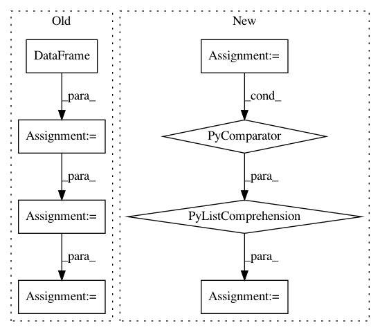

fc4917ae8a7320fc9a258b50d82a177ed2124a91,category_encoders/basen.py,BaseNEncoder,fit_base_n_encoding,#BaseNEncoder#Any#,148
Before Change
values = values[values > 0]
digits = self.calc_required_digits(X, col)
X_unique = pd.DataFrame(index=values)
X_unique_to_cols = X_unique.index.map(lambda x: self.col_transform(x, digits))
for dig in range(digits):
X_unique[str(col) + "_%d" % (dig,)] = X_unique_to_cols.map(
lambda r: int(r[dig]) if r is not None else None)
if self.handle_unknown == "return_nan":
X_unique.loc[-1] = np.nan
elif self.handle_unknown == "value":
After Change
values = values[values > 0]
digits = self.calc_required_digits(values)
X_unique = pd.DataFrame(index=values,
columns=[str(col) + "_%d" % x for x in range(digits)],
data=np.array([self.col_transform(x, digits) for x in range(1, len(values) + 1)]))
if self.handle_unknown == "return_nan":
X_unique.loc[-1] = np.nan
elif self.handle_unknown == "value":
In pattern: SUPERPATTERN
Frequency: 3
Non-data size: 8
Instances
Project Name: scikit-learn-contrib/categorical-encoding
Commit Name: fc4917ae8a7320fc9a258b50d82a177ed2124a91
Time: 2018-12-21
Author: jcastaldo08@gmail.com
File Name: category_encoders/basen.py
Class Name: BaseNEncoder
Method Name: fit_base_n_encoding
Project Name: daavoo/pyntcloud
Commit Name: b6106d3044f7800af8710cbdc998ed78f7e6588c
Time: 2016-11-30
Author: daviddelaiglesiacastro@gmail.com
File Name: pyntcloud/structures/octree.py
Class Name: Octree
Method Name: get_level_as_sf
Project Name: QUANTAXIS/QUANTAXIS
Commit Name: a3b39f9e6e7e1b33a3eb9919923d939430b60b86
Time: 2017-09-01
Author: yutiansut@qq.com
File Name: QUANTAXIS/QAFetch/QATdx.py
Class Name:
Method Name: QA_fetch_get_stock_latest